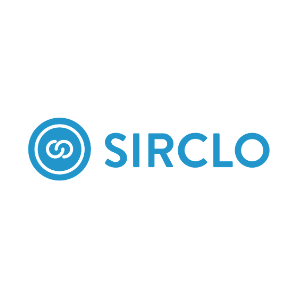

Case Study — Project Manager
TikTok Shop
Channel Integration
Be The Future, Today. Let's Say SIRCLO needed to connect 1,200+ merchants to TikTok Shop before the Q4 sales season. As Project Manager, I owned the full 14-week delivery, from stakeholder alignment to go-live, coordinating product, engineering, merchant success, and QA teams across three phases.

Context
Why this project existed
TikTok Shop grew to become Indonesia's third-largest e-commerce platform in 2023. Sirclo's merchants were already selling on Tokopedia, Shopee, and Lazada through the Sirclo Commerce dashboard, but TikTok Shop was not yet supported. Merchants were managing it manually, outside the platform, which created inventory sync errors, missed orders, and wasted time.
The business case was clear: adding TikTok Shop as a native channel would keep merchants on the platform, reduce churn risk, and open a new revenue line for Sirclo. The window was narrow. Q4 (Harbolnas) was the highest-traffic period of the year. We had to ship before it started.
SIRCLO
Indonesia's leading omnichannel commerce enabler. Helps brands and SMEs sell across Tokopedia, Shopee, Lazada, and other channels from a single dashboard.
Industry
E-commerce Enablement
Active Merchants
10,000+ SMEs and brands
Channels Supported (before)
Tokopedia, Shopee, Lazada, Blibli
Project Trigger
TikTok Shop Indonesia Q4 surge
Problem
What was breaking before we built
Before the integration, merchants who wanted to use TikTok Shop had to manage it completely outside Sirclo. This created a set of operational problems that the merchant success team was escalating every week.
37%
Of active merchants reported TikTok Shop orders missed due to lack of sync with their Sirclo inventory
3.2 hrs
Average daily time merchants spent manually reconciling orders across platforms
18%
Of churned merchants in Q3 cited "TikTok Shop not supported" as a reason for leaving
6 wks
Remaining before Harbolnas. Any delay past this date meant missing the highest-GMV window of the year
My Role
What I owned as Project Manager
I was not the product owner and I was not writing code. My job was to make sure everyone else could do their job on time, with no blockers, and with full clarity on what we were building. That meant owning the scope, the plan, the risks, and the communication.
- Wrote the Project Charter, defined scope, success criteria, and constraints before any sprint started
- Built the full 14-week project timeline with milestones, dependencies, and buffer allocation across 3 phases
- Facilitated the RACI alignment meeting with all team leads to define who decides, who executes, and who is informed
- Maintained the Risk Register and ran weekly risk reviews; escalated two blockers to the engineering director before they delayed sprint delivery
- Ran daily standups and bi-weekly stakeholder updates throughout the project
- Managed scope change requests using a formal change control process to prevent sprint creep
- Coordinated the go/no-go decision for launch with sign-offs from QA, Merchant Success, and Engineering leads
Project Charter
Scope definition
One of the first documents I produced was a clear in-scope and out-of-scope list, agreed upon by all stakeholders in Week 1. Without this, engineering would have built features that belonged in a later phase, and we would have missed the Q4 deadline.
In Scope
- TikTok Shop API integration (product listing sync)
- Real-time inventory synchronization across all connected channels
- Order management consolidation into Sirclo dashboard
- Merchant onboarding flow for TikTok Shop OAuth connection
- Basic analytics: GMV, order count, and channel comparison
- QA testing for 500+ merchant configurations in pilot
- Merchant Success team training on support procedures
Out of Scope
- TikTok Shop Live commerce feature integration
- Automated ad spend management from Sirclo dashboard
- TikTok Shop affiliate program tracking
- Custom analytics dashboard beyond basic GMV reporting
- Migration of historical TikTok order data pre-integration
- Support for TikTok Shop markets outside Indonesia
Timeline
14-week project plan
I structured the project into 3 phases across 7 sprints. Each phase had a clear exit criterion before the next began. Phase 1 could not close until the API contract was signed. Phase 2 could not close until QA passed pilot merchants. Phase 3 ended at go-live.
Stakeholder Alignment
Phase 1
API Contract & Tech Discovery
Phase 1
API Integration Build
Phase 2
Merchant Onboarding UI
Phase 2
QA Testing (Pilot)
Phase 2
Merchant Migration (Batch)
Phase 3
Go-Live & Stabilization
Phase 3
Phase 1: Discovery & Planning (Wk 1-3)
Phase 2: Build & QA (Wk 4-10)
Phase 3: Rollout & Go-Live (Wk 11-14)
Stakeholder Management
Who I coordinated and how
Six stakeholder groups were involved in this project. I ran a stakeholder mapping session in Week 1 to determine communication cadence, decision rights, and escalation paths for each group.
Executive Sponsor
VP of Product
High Influence
Monthly steering updates. Owned the go/no-go final sign-off. I pre-aligned with them before every milestone review to avoid surprises.
Engineering
Backend Lead
High Influence
Daily sync during sprint weeks. Primary point of escalation for API blockers. I tracked their dependency on TikTok's developer portal approval separately.
QA
QA Lead
High Influence
Involved from Phase 1 to define acceptance criteria. Their sign-off was a mandatory gate before Phase 3 could start.
Merchant Success
CS Team Lead
Medium Influence
Consulted during onboarding flow design. Owned training execution in Phase 3. I gave them a 2-week preview of the flow before pilot launch.
Product Design
Senior Designer
Medium Influence
Sprint 2-4 involvement. Delivered onboarding UI specs. I maintained a shared Figma handoff checklist to track design-to-dev readiness per feature.
External
TikTok Developer Portal
Medium Influence
API access required formal approval. I tracked this as the highest-probability delay risk from Week 1 and submitted the application in Week 2 to buffer for review time.
RACI Matrix
Who does what, decided in Week 1
Ambiguity over decision ownership was the biggest risk in a cross-functional project like this. I facilitated a RACI session in Week 1 and circulated the agreed matrix to all leads before Sprint 1 kicked off.
| Activity |
PM (Me) |
Engineering |
Product Design |
QA |
Merchant Success |
VP Product |
| Project Charter & Scope |
A |
C |
I |
I |
C |
A |
| Sprint Planning |
R |
R |
R |
C |
I |
I |
| API Integration Development |
I |
R |
I |
C |
I |
I |
| Acceptance Criteria Definition |
R |
C |
C |
R |
C |
A |
| Pilot Testing (500 merchants) |
R |
C |
I |
R |
R |
I |
| Go / No-Go Decision |
R |
C |
I |
R |
C |
A |
| Full Merchant Rollout |
R |
C |
I |
I |
R |
I |
R Responsible (does the work)
A Accountable (final say)
C Consulted (input required)
I Informed (kept updated)
Risk Management
Risk register and how each was handled
I maintained a live Risk Register throughout the project. Every risk was rated by probability and impact, assigned an owner, and reviewed in the weekly stakeholder sync. Three of the five risks materialized; all three were resolved before they hit the critical path.
| Risk |
Level |
Owner |
Mitigation Action |
Status |
| TikTok Developer Portal approval delayed, blocking API access |
High |
PM |
Submitted portal application in Week 2, 2 weeks ahead of when engineering needed access. Added a 5-day buffer in Phase 2 sprint plan. |
Mitigated |
| TikTok API rate limits cause inventory sync failures for high-volume merchants |
High |
Engineering Lead |
Identified in Sprint 4 during pilot. Engineering implemented a queue-based sync with exponential backoff. Re-tested in Sprint 6 before pilot sign-off. |
Mitigated |
| Merchant Success team not ready for support volume at go-live |
Medium |
CS Team Lead |
Ran training 2 weeks before go-live instead of 1. Created a quick-reference troubleshooting guide for the 10 most common connection errors. |
Mitigated |
| Scope creep from late requests to add TikTok Live support |
Medium |
PM |
Enforced the formal change request process. TikTok Live was formally deferred to Q1 roadmap with documented justification and VP sign-off. |
Mitigated |
| Key backend engineer exits project mid-sprint |
Low |
Engineering Lead |
Pair-programming on critical API modules from Sprint 3 to ensure knowledge was not siloed. No personnel change occurred. |
Not Triggered |
Execution
How each phase was delivered
Phase 1
Discovery and Planning (Weeks 1-3)
Produced the Project Charter, obtained stakeholder sign-off on scope, submitted the TikTok Developer Portal application, and completed the technical discovery session with Engineering to confirm API feasibility. Exited with a signed RACI matrix and a full sprint plan for Phases 2 and 3.
Phase 2
Build and QA (Weeks 4-10)
Ran 4 sprints covering API integration, merchant onboarding UI, and pilot QA with 500 merchant accounts. I tracked a daily blocker log and ran dependency checks every Monday morning. Escalated the rate-limit bug to Engineering Lead in Week 7; resolved by Week 9. Phase 2 closed on schedule after QA sign-off on all acceptance criteria.
Phase 3
Rollout and Go-Live (Weeks 11-14)
Migrated merchants in three batches of 400 to manage support load. Merchant Success completed training in Week 11. Ran the formal go/no-go review in Week 13 with QA, Engineering, and CS leads. All three gave green lights. Full go-live on Week 14, Day 1 of Harbolnas season. Monitored daily error rates and sync latency for the first 72 hours post-launch.
Before and After
What changed for merchants
Before Integration
- TikTok Shop orders managed in a separate app with no connection to Sirclo inventory
- 3+ hours per day spent manually reconciling stock and orders across platforms
- Overselling and stockouts during peak traffic were common
- No unified order view. Merchants missed orders during high-volume periods
- Customer service tickets about TikTok sync errors increased 40% QoQ
- 18% of churning merchants cited missing TikTok Shop as their reason for leaving
After Integration
- TikTok Shop inventory and orders sync in real time inside the Sirclo dashboard
- Channel connection completable in under 4 minutes via OAuth flow
- Inventory sync latency under 30 seconds across all connected channels
- Unified order view across Tokopedia, Shopee, Lazada, and TikTok Shop
- Zero critical sync errors in first 72 hours post-launch across 1,200+ merchants
- 40% reduction in time spent on cross-platform order management per merchant
Results
Outcomes after full delivery
14 wks
On-time delivery, 0 days late
1,200+
Merchants enabled at go-live
40%
Faster channel connection vs manual
3/5
Risks mitigated before hitting critical path
+28%
Merchant GMV through Sirclo during Harbolnas
Learnings
What I took away
External dependencies need their own track in your project plan
The TikTok Developer Portal approval was entirely outside my control. I treated it as a separate sub-project with its own timeline, submission date, and buffer allocation from Day 1. A project manager who waits for external approvals before planning around them will always be late.
RACI is only useful if you run it as a meeting, not a document
Distributing a RACI matrix via email does not work. I ran a 90-minute session where every lead had to verbally agree to their row before we moved on. Two disagreements surfaced during the session that would have caused conflicts in Sprint 3 if we had not resolved them in Week 1.
Batch your rollout; never go all-in at once
Migrating 1,200 merchants in three batches of 400 meant that issues in Batch 1 could be fixed before Batch 2 started. It also let the Merchant Success team manage support volume without being overwhelmed. A single-wave launch would have stretched the support team and masked bugs in noise.